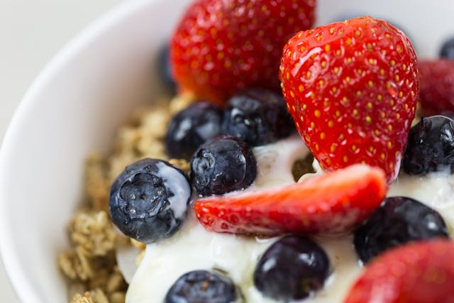

Home
Overnight Oats

Description
Overnight oats are an easy and healthy breakfast option.
It takes about 5-10 mins to make and prep so that you can grab and go in the morning.
They are good in the fridge for up to 1 week, so you can make a few a at a time.
Ingredients
Steps
- Combine all the ingredients besides the fruit in a jar, seal, and shake. Or just mix with a spoon.
- Open the jar and put the fruits in.
- Seal the jar and refrigerate overnight.